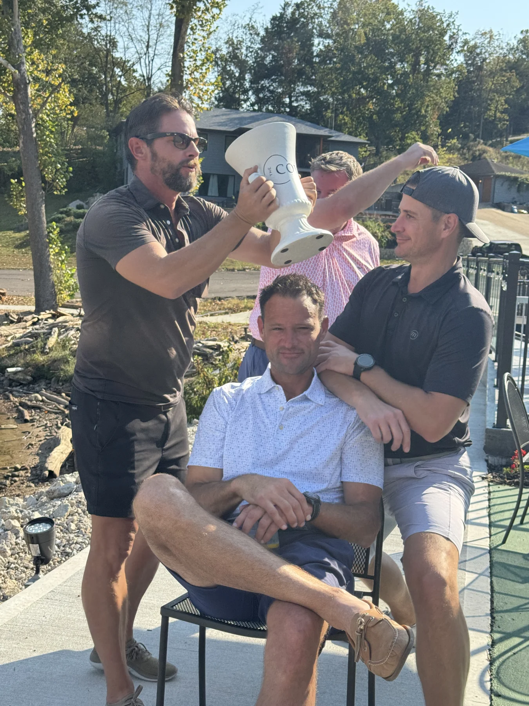
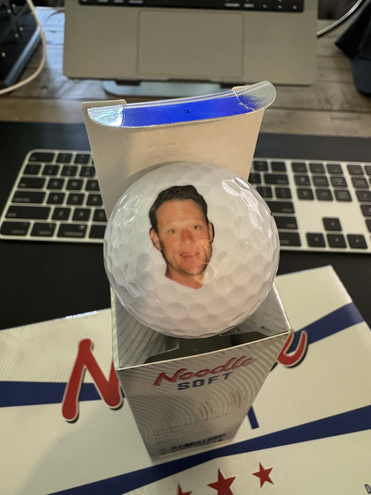

THE UNOFFICIAL HOME OF 3 VS. FRE
A tradition
unlike
anything fair.
Three friends. One Frede. A yearly reminder that there’s no “I” in team. There is, however, one Jason.
Examine the evidence
3 : 1
UNBALANCED
01 / THE FORMAT
Strength
in numbers.
Jason is actually really good at golf.
We have chosen to address this
by being three people.
Every year, we tee it up against our friend Jason Frede. Three of us. One of him. We’ve won the last several years, and handled it with exactly the level of humility you’d expect from people who bought this domain.
Equal opportunity to participate. Unequal number of participants.
02 / THE EVIDENCE
For the record.
Some people keep scorecards.
We keep receipts.

03 / PSYCHOLOGICAL EQUIPMENT
All the gear.
None of the shame.
Towels. Koozies. Golf balls. When you can’t improve your game, improve your merchandising.
This year, the golf balls have a QR code. If that’s how you got here: yes, we bought an entire domain for this.
OFFICIAL EQUIPMENT OF AN UNOFFICIAL GRUDGE04 / THE RULES COMMITTEE
We’ve reviewed
your complaint.
Our independent panel of the same three guys has reached a decision.
“The format is fair. The vote was 3–1.”
All rulings are jokes. All appeals are also jokes.
IN ALL SERIOUSNESS (BRIEFLY)